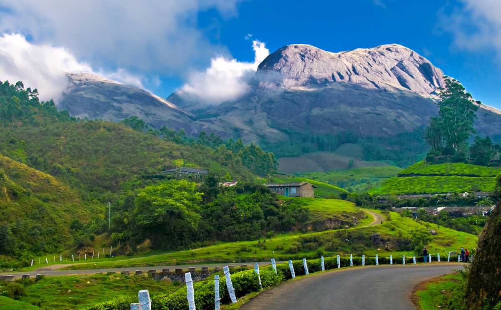

Munnar is a beautiful town in Kerala State at an elevation of 1,532 m

Munnar, Kerala

Munnar is surrounded by rolling hills dotted with tea plantations established in the late 19th
century.
Atukkad Falls, locted just 2 Kms away from Munnar
Pothamedu View Point - perfect to capture picturesque view of nature
Eravikulam National Park - A UNESCO World heritage site
Eravikulam National Park is the first national park in India